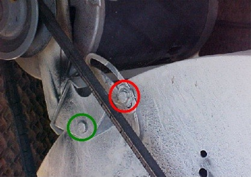
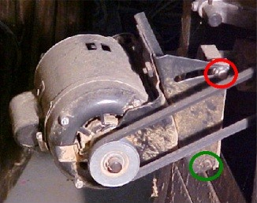
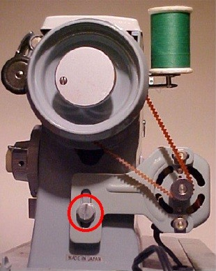

| Feature Article - March 2004 |
| by Do-While Jones |
Does comparative anatomy really show evolution?
Comparative Anatomy Provides Structural Evidence of EvolutionAppearance has long been used as an indicator of the relatedness of organisms. Structure, inexorably tied to function, also provides evidence of descent with modification. The elephant and the mammoth, for instance, clearly have similar anatomies and share a common ancestor. Unrelated Species in Similar Environments Have Evolved Similar FormsEvolution by natural selection also predicts that, given similar environmental demands, unrelated species might independently evolve superficially similar structures, a process called convergent evolution. Such outwardly similar body parts in unrelated organisms, termed analogous structures, may be very different in internal anatomy, because the parts are not derived from common ancestral structures. The wings of flies and of birds are analogous structures that have arisen by convergent evolution; the fat-insulated, streamlined shapes of seals (mammals) and of penguins (birds) are another example (Fig. 14-7). Homologous and Vestigial Structures Provide Evidence of Relatedness of Organism Adapted to Different EnvironmentsModern organisms are adapted to a wide variety of habitats and lifestyles. The forelimbs of birds and mammals, for example, are variously used for flying, swimming, running over several types of terrain, and grasping objects such as branches and tools. Despite this enormous diversity of function, the internal anatomy of all bird and mammal forelimbs is remarkably similar (Fig. 14-8). It is inconceivable that nearly the same bone arrangement could be ideal for different functions, as we would expect if each animal had been created separately. Such similarity is exactly what we would expect, however, if bird and mammal forelimbs were derived from a common ancestor. Through natural selection, each has been modified to perform a particular function. Such internally similar structures are called homologous structures, meaning that they have the same evolutionary origin despite possible differences in function. Studies of comparative anatomy have long been used to determine relationships among organisms, on the grounds that the more similar the internal structures of two species, the more closely related the species must be; that is, the more recently they must have diverged from a common ancestor. 1 [empahsis in original] |
The textbook makes seven basic points.
Notice that if things are similar, it is evidence of evolution. It shows they have a common origin. But, if things are different, it is evidence of evolution. It shows that they have changed over time. Since similarity is evidence of evolution, and difference is evidence of evolution, everything is evidence of evolution!
If you ask an evolutionist why we don't see evidence of evolution today, he will probably say that creatures no longer evolve because they are just about ideally suited to the environment. There isn't any more evolution because there isn't any more room for improvement. But then, in point 4 above, the argument is that creatures are so badly designed that they could not be the product of any competent designer. (This is the classic "Panda's Thumb" argument.) They can't have it both ways. Creatures are either well-suited to the environment or they are not.
The assertion was made several times that natural selection and the environment have the power to change the function of a structure. That is, spending lots of time in the water can turn a mammal's arm into a flipper. But the evidence for this is totally lacking scientific support.
Consider the following four pictures. The first is a picture of the bracket that adjusts the tension of the belt on the evaporative cooler on the roof of my house. The bracket pivots on the green screw when both the red and green screws are loosened.

The second picture shows a nearly identical bracket that adjusts the tension of the belt on the table saw in my garage. This bracket also pivots on the green screw when both the red and green screws are loosened. The evaporative cooler and the table saw have "homologous features." But that's not all! Homology abounds even more!

The third picture shows the bracket that tensions the belt on the alternator on my truck. The bracket pivots on the green screw when both the red and green screws are loosened, just like brackets on the cooler and table saw.
The last picture shows the bracket that tensions the belt on my sewing machine. The bracket slides when the red screw is loosened. (It is the most highly evolved because the vestigial green screw has been eliminated.)

All these brackets look similar, and perform similar functions. Are they evidence of evolution from a common ancestor? Of course not! Were they all made by a common designer? No, these brackets aren't proof of a common designer, either. (But they clearly are the result of conscious, intentional, design.)
These brackets are similar simply because there are only a few good ways to connect a motor to a load using a belt. Biological structures are similar simply because there are only a few good ways to perform biological functions. There is a remarkable amount of variation and creativity in biological structures, but there are also underlying constraints that limit designs.
Homology is not evidence of evolution. It is simply evidence of a limited solution space.
| Quick links to | |
|---|---|
| Science Against Evolution Home Page |
Back issues of Disclosure (our newsletter) |
| Web Site of the Month |
Topical Index |
Footnotes:
1
Audesirk & Audesirk, Biology, 5th edition, 1999, pages 264 - 265
(Ev)